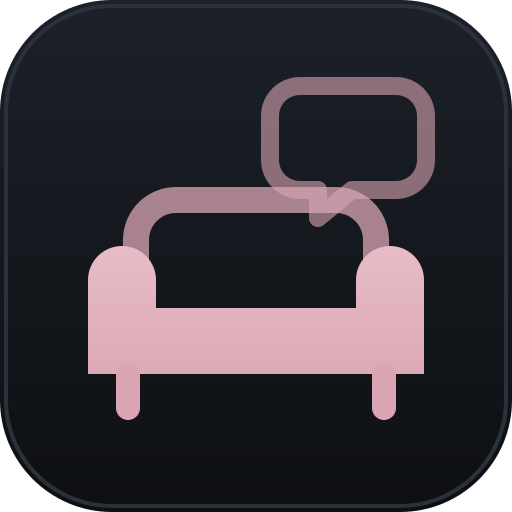

Votre Wi-Fi à vous, partout. Des applis qui volent hors ligne.
AirplaneMode transforme un petit routeur en point d'accès privé. Il se connecte une seule fois au Wi-Fi de l'hôtel pour tous vos appareils, se reconnecte tout seul et fait tourner des jeux, des outils et un petit modèle de langage sans aucune connexion Internet.
C'est le tout début. Tout est testé sur un vrai OpenWrt dans Docker ; le premier matériel est en route.


Conçu pour les hôtels, les aéroports et les avions
Tout tourne sur le boîtier. Vos appareils rejoignent un réseau qui vous appartient, et le boîtier s'occupe du reste.
Une connexion pour tout le monde
Une personne accepte la page de conditions de l'hôtel, et tous les téléphones, ordinateurs portables et tablettes sont en ligne. Pas de paiement par appareil.
Se reconnecte tout seul
Il mémorise les réseaux et s'y reconnecte. Branchez le câble Ethernet de la chambre : il passe en priorité.
Des applis sans Internet
Jeux de cartes entre amis sur le point d'accès, quiz de voyage, fictions interactives, films, partage de fichiers, Wikivoyage hors ligne et un modèle de langage intégré au boîtier.
Votre VPN maison
Collez une configuration WireGuard et tout passe par elle. L'hôtel ne voit que du trafic chiffré.
Appareils et consommation de données
Voyez qui est connecté et combien de données chaque réseau a consommé. Mettez en pause la tablette qui enchaîne les vidéos toute la nuit.
Moindre privilège
Le panneau d'administration pilote le routeur avec un compte limité aux réglages Wi-Fi. Jamais en root.
Du carton au point d'accès en une demi-heure environ
Choisissez votre routeur. Cochez les étapes au fur et à mesure : cette page se souvient d'où vous en êtes.
-
Réunir le matériel
NanoPi R6S, 8 GB L'appareil lui-même. Prenez la version avec boîtier métallique : c'est lui qui sert de dissipateur. 2 × adaptateur Wi-Fi USB Le R6S n'a pas de Wi-Fi. MediaTek uniquement : p. ex. ALFA AWUS036ACM (MT7612U) pour le point d'accès, AWUS036ACHM (MT7610U) pour le réseau de l'hôtel. Alimentation USB-C 5 V / 3 A Ou une batterie externe USB-C PD. Carte microSD de 8 Go ou plus Seulement pour le flashage, une fois. Petite rallonge USB Facultatif. Éloigne l'un des adaptateurs du boîtier. -
Flasher FriendlyWrt sur l'eMMC
FriendlyWrt est l'OpenWrt de FriendlyElec, avec Docker intégré.
- Ouvrez la page de téléchargement de FriendlyElec →
01_Official images→02_SD-to-eMMC images, puis téléchargez le fichier nommé commerk3588-eflasher-friendlywrt-…-docker-….img.gz. Prenez celui qui adockerdans son nom. - Écrivez-le sur la carte microSD avec balenaEtcher (il accepte directement le
.gz). Sous Windows, l'outil indiqué par FriendlyElec est Win32 Disk Imager : décompressez d'abord l'image. - Insérez la carte dans le R6S et allumez-le. Il s'installe tout seul sur l'eMMC. Surveillez le voyant rouge SYS :
clignote viteinstallation en cours, quelques minutes lent + vertterminé : SYS clignote lentement et les voyants WAN/LAN restent allumés- Débranchez l'alimentation, retirez la carte et rallumez. Il démarre désormais sur l'eMMC.
- Ouvrez la page de téléchargement de FriendlyElec →
-
Se connecter une fois et le mettre en ligne
- Branchez votre ordinateur sur le port marqué LAN, et un câble venant de votre box sur le port marqué WAN.
- Ouvrez http://192.168.2.1. Connectez-vous en
rootavec le mot de passepassword(sur certaines versions, laissez-le vide). - Définissez votre propre mot de passe root : System → Administration. Il reste le vôtre ; AirplaneMode reçoit son propre compte, aux droits limités.
-
Brancher les adaptateurs Wi-Fi
Mettez l'adaptateur du point d'accès (AWUS036ACM) dans le port bleu USB 3.0 et l'autre dans le port USB 2.0. Dans LuCI, Network → Wireless doit maintenant afficher deux radios. Inutile de les configurer : le panneau d'administration s'en charge.
-
Lancer l'installeur
Ouvrez un terminal (PowerShell sous Windows, Terminal sur Mac), connectez-vous avec
ssh root@192.168.2.1, puis collez ceci. Il vérifie le routeur, installe tout (environ 3,8 Go) et affiche votre mot de passe d'administration à la fin. -
Nommer votre point d'accès
Ouvrez http://airplane.mode:8080/admin/, connectez-vous avec le mot de passe affiché par l'installeur, puis donnez un nom et un mot de passe à votre point d'accès. Vos appareils s'en souviendront ensuite, où que vous alliez.
-
Vérifier votre modèle
Il vous faut un GL.iNet arm64 (par exemple Flint 2 / GL-MT6000) avec 1 Go de RAM, plus une clé USB ou une carte SD de 8 Go ou plus pour Docker. Les anciens modèles MIPS ne conviennent pas.
-
Le mettre en ligne et ouvrir un shell
Connectez le routeur à Internet depuis son panneau d'administration (http://192.168.8.1). Puis, depuis un terminal :
ssh root@192.168.8.1, avec le mot de passe du panneau d'administration. -
Installer Docker
Montez votre stockage USB ou SD (panneau d'administration GL.iNet → Applications → Network Storage), puis :
# opkg update && opkg install dockerd docker docker-composePlacez les données de Docker sur le stockage USB/SD (
data_rootdans/etc/config/dockerd) et démarrez-le avec/etc/init.d/dockerd restart. Les noms des paquets peuvent varier selon la version du firmware. -
Lancer l'installeur
Collez ceci dans le même shell. Il vérifie le routeur, installe tout et affiche votre mot de passe d'administration à la fin.
-
Nommer votre point d'accès, et choisir un seul répéteur
Ouvrez http://airplane.mode:8080/admin/ et connectez-vous. GL.iNet a sa propre page de répéteur, qui modifie aussi le Wi-Fi amont : utilisez soit celle-ci, soit le panneau Internet source d'AirplaneMode, pas les deux.
De quoi s'occuper à 10 000 mètres d'altitude
Dix applis pour l'instant. Chacune est un projet open source à part entière et s'ajoute sous forme de conteneur.
The Dark Light
Des fictions interactives racontées par le modèle embarqué, en solo ou en groupe depuis les téléphones de chacun : un phare plongé dans le noir, un col de montagne gelé et un marais noyé dans le brouillard.
Jeux · utilise le modèle (pas sur GL.iNet)Gate Change
Un jeu de cartes rapide, couleurs et chiffres, de 2 à 8 joueurs. Affrontez vos amis sur le point d'accès, chacun sur son téléphone, ou des bots.
JeuxPassport
Un jeu de cartes de deck-building sur le thème du voyage. Collectionnez tampons et visas contre vos amis sur le point d'accès, ou contre des bots.
JeuxWayfarer
Un quiz de voyage tiré du Travel Guide : capitales, monnaies, codes d'aéroport, expressions. Vol du jour, mode infini, meilleurs scores.
JeuxDoom
Le jeu de tir classique, sur votre appareil avec des commandes tactiles. Freedoom, l'épisode aéroportuaire Layover, ou vos propres WADs depuis Drop.
JeuxCinema
Regardez les films et séries, et écoutez la musique, déposés dans Drop. Chaque appareil reprend là où il s'était arrêté.
DivertissementQuickShot
Un fil sans fin des vidéos courtes du dossier QuickShot de Drop. Balayez, likez, commentez.
Divertissement
The Couch
Un simulateur de psy : parlez de ce qui vous tracasse avec l'un des six thérapeutes, de l'Empathique bienveillant au Narcissique farceur, incarnés par le modèle embarqué. Ce n'est pas une vraie thérapie.
Divertissement · utilise le modèle (pas sur GL.iNet)Travel Guide
Tout Wikivoyage, hors ligne. Cherchez une destination, ou posez une question et obtenez une réponse tirée du guide.
Voyage · utilise le modèle (pas sur GL.iNet)Drop
Envoyez fichiers et notes entre tous les téléphones, tablettes et ordinateurs du point d'accès, et gardez des films pour le vol.
Outils